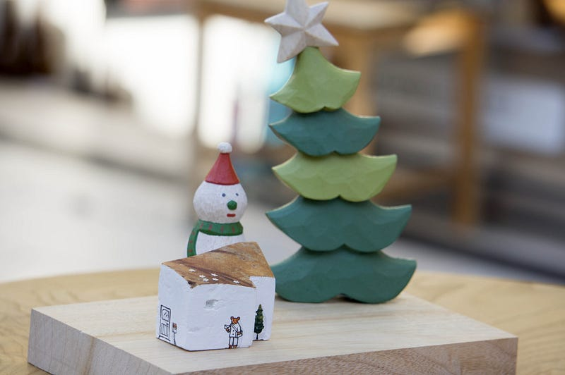

lestrrat::medium
lestrrat::medium
yet another site to remember
Yay, here’s a another site to remember, and here’s a photo from my neighborhood woodworks store :)

Yay, here’s a another site to remember, and here’s a photo from my neighborhood woodworks store :)
